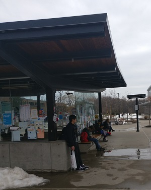

Taking the Bus
There are many busses going to and from campus, connecting parts of campus and the surrounding areas. Daily RIT shuttles (which are now RIT-branded vehicles) connect all of the residential areas of RIT, Gleason Circle on Academic Side, Park Point, Province, and the RIT Inn. Bus schedules are available and vary from year to year, but generally this bus is the most frequent bus. Travel on this bus is free.
Secondly is the RIT Weekend Shuttle (which is also now RIT-branded). Like the name suggests, the Weekend Shuttle only operates on Friday evenings, Saturday, and Sunday. The Weekend Shuttle departs from Gleason Circle about every hour and a half and goes to most major shopping and interest areas in Henrietta. The RIT Weekend Shuttle is also free.
Finally is the RTS bus system serving the greater Rochester area. Unlike the previous 2, this bus has a fee, but is generally very low (usually $1). These buses are less frequent, but serves the entire Rochester area, connecting to the Bus Terminal in Downtown Rochester.